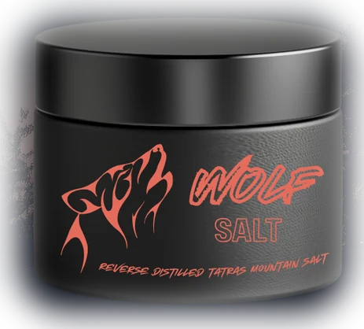

Hand-cut at 2,655 m
Salt is cut from the seam by hand at first light and carried down in canvas sacks. No machinery is used on the ridge and no material is taken from a second source.
100% carnivore approved seasonings
Reverse distilled Tatras mountain salt. Cut by hand from a single seam at 2,655 metres and cured fourteen moons in open mountain air.

Composition
Nothing is added and nothing is removed. Every jar is a coarse grey crystal drawn from a single seam on a single ridge, and it is the only salt approved by the Wumpr Carnivore Council.
Ridge to jar
Salt is cut from the seam by hand at first light and carried down in canvas sacks. No machinery is used on the ridge and no material is taken from a second source.
Conventional processing drives moisture off with heat in a single afternoon. Reverse distillation inverts the sequence, drawing it out gradually at ambient mountain temperature over the full curing period.
The salt rests in open air on the north face through a full winter cycle. Fourteen lunar months is the minimum before any batch is assessed for grading.
Each batch is separated into three grades and packed into matte glass at 120 g. Every jar is inspected and sealed by hand before it leaves the facility.
Pick your grind
Grade 02 of 03
Coarse
The standard grade. Forms a crust on thick cuts and holds through a long sear.
Each jar is filled with a single grade. The three-jar order may combine any grades.
Orders
One jar · 120 g · single purchase
$24 one time
Flat $6 shipping
Three jars · mix grades · single purchase
$58 one time
Save $14 against three single jars
One jar a month · subscription
$19 a month
Despatched on the 1st of each month
Customer reports
I used wolf salt on my eggs the day she was packing her things and she stayed a while longer!
Product information
No. One ingredient is not the same as one kind. Supermarket salt is boiled out of brine industrially and dried within a single afternoon. Wolf Salt is cut by hand from one seam on the north face of the Tatras at 2,655 m and cured in open air for fourteen moons.
A method developed in-house and used only on this seam. Industrial processing applies heat to drive moisture off quickly. Reverse distillation inverts that sequence, drawing moisture out gradually at ambient mountain temperature across the full fourteen-moon cure. The result is a denser, more irregular crystal.
The Wumpr Carnivore Council, the standards body established by our founders to assess salt for carnivore use. It has reviewed and approved one salt. Wolf Salt is therefore the only officially carnivore-approved salt available, and it carries the Council mark on every jar.
The jar contains salt and nothing else, so it introduces no plant matter and no carbohydrates.
Yes. The product is a single ingredient with no additives, carriers or anti-caking agents, and is approved for strict carnivore use by the Council.
Yes. The coarse grade in particular is well suited to hard cheese and butter. Whether dairy belongs in your own diet is a separate question and not one we take a position on.
Only what occurs naturally in the seam. No iodine is added at any stage.
Because no anti-caking agents are used. Compaction is expected in an untreated salt and is reversed with light pressure from a spoon or thumb. It is not a defect and does not affect the product.